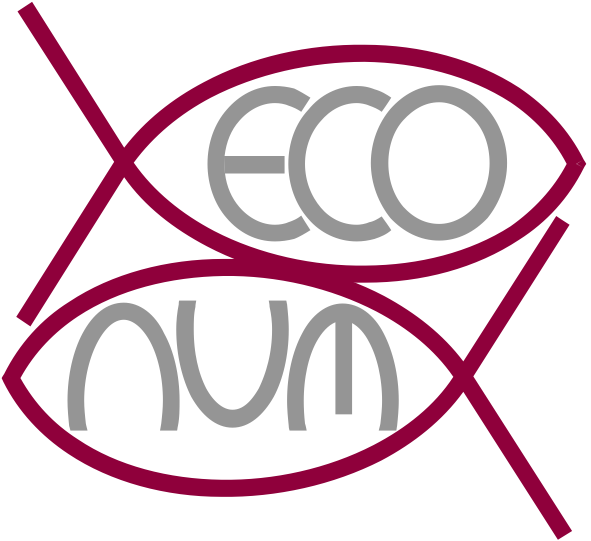

Guide d’identification des organismes mésozooplanctoniques de la Mer Ligurienne

Préface
Ce guide d’identification a été réalisé par Dugauquier Rémy dans le cadre de son travail de mémoire présenté en vue de l’obtention du grade de Master en biologie des organismes et écologie (2018 – 2019) : Classification supervisée du mésozooplancton de Calvi : mise au point de méthodes d’étude des classes rares d’un set d’apprentissage et mise en contexte environnemental.
Guyliann Engels et Philippe Grosjean ont contribué dans la correction, l’ajout de vignettes et la mise en page au format Quarto Book.
Ce guide est un Quarto book. Pour en apprendre d’avantages sur ce format, consultez : https://quarto.org/docs/books.